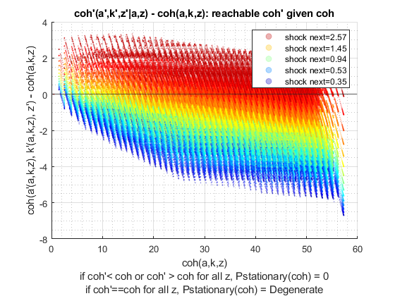
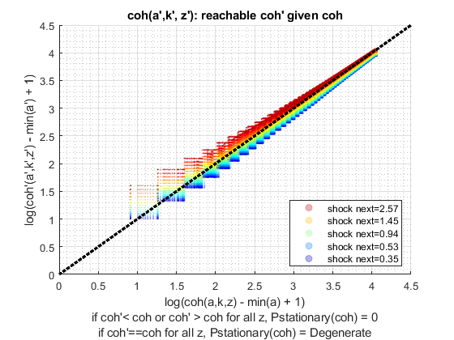
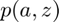
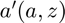
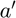
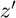

Derive Two Asset (Risky + Safe) and Choices/Outcomes Distribution (Loop)
back to Fan's Dynamic Assets Repository Table of Content.
Contents
- FF_AKZ_DS finds the stationary asset distributions
- Default
- Parse Parameters
- Start Profiler and Timer
- f({a,k},z): Initialize Output Matrixes
- f({a,k},z): Initialize Convergence Conditions
- f({a,k},z): Derive Stationary Distribution
- f({a,k},z): Iterate over Probability mass for Discrete Random Variable
- f({a,k},z): Check Tolerance and Continuation
- End Time and Profiler
- f(y), f(c), f(a), f(k): Generate Key Distributional Statistics for Each outcome
function [result_map] = ff_akz_ds(varargin)
FF_AKZ_DS finds the stationary asset distributions
Building on the Asset Dynamic Programming Problem ff_akz_vf_vecsv, here we solve for the asset distribution. Also works with ff_wkz_vf_vecsv. This version of the program uses loops.
This is the risky + safe asset version of ff_az_ds, which finds the stationary distribution for the az and abz single asset model. See that file for additional descriptions and comparisons. These two functions are nearly identical
@example
% Get Default Parameters
it_param_set = 6;
[param_map, support_map] = ffs_az_set_default_param(it_param_set);
% Change Keys in param_map
param_map('it_w_n') = 750;
param_map('it_ak_n') = param_map('it_w_n');
param_map('it_z_n') = 11;
param_map('fl_a_max') = 100;
param_map('fl_w') = 1.3;
% Change Keys support_map
support_map('bl_display') = false;
support_map('bl_post') = true;
support_map('bl_display_final') = false;
% Call Program with external parameters that override defaults
ff_akz_ds(param_map, support_map);@include
@seealso
- derive distribution f(y'(y,z)) one asset loop: ff_az_ds
- derive distribution f(y'({x,y},z)) two assets loop: ff_akz_ds
- derive distribution f(y'({x,y},z, z')) two assets loop: ff_iwkz_ds
- derive distribution f(y'({y},z)) or f(y'({x,y},z)) vectorized: ff_az_ds_vec
- derive distribution f(y'({y},z, z')) or f(y'({x,y},z, z')) vectorized: ff_iwkz_ds_vec
- derive distribution f(y'({y},z)) or f(y'({x,y},z)) semi-analytical: ff_az_ds_vecsv
- derive distribution f(y'({y},z, z')) or f(y'({x,y},z, z')) semi-analytical: ff_iwkz_ds_vecsv
Default
Program can be externally invoked with az, abz or various other programs. By default, program invokes using az model programs:
- it_subset = 5 is basic invoke quick test
- it_subset = 6 is invoke full test
- it_subset = 7 is profiling invoke
- it_subset = 8 is matlab publish
- it_subset = 9 is invoke operational (only final stats) and coh graph
if (~isempty(varargin)) % if invoked from outside override fully [param_map, support_map, armt_map, ~, result_map, ~] = varargin{:}; else % default invoke close all; it_param_set = 8; st_akz_or_wkz = 'wkz'; % 1. Generate Parameters [param_map, support_map] = ffs_akz_set_default_param(it_param_set); % Note: param_map and support_map can be adjusted here or outside to override defaults % param_map('it_w_n') = 50; % param_map('it_z_n') = 15; % 2. Generate function and grids [armt_map, func_map] = ffs_akz_get_funcgrid(param_map, support_map); % 1 for override % 3. Solve value and policy function using az_vf_vecsv, if want to solve % other models, solve outside then provide result_map as input % works for ff_akz_vf_vecsv as well as ff_wkz_vf_vecsv if (strcmp(st_akz_or_wkz, 'akz')) [result_map] = ff_akz_vf_vecsv(param_map, support_map, armt_map, func_map); end if (strcmp(st_akz_or_wkz, 'wkz')) [result_map] = ff_wkz_vf_vecsv(param_map, support_map, armt_map, func_map); end end 
Parse Parameters
% append function name st_func_name = 'ff_akz_ds'; support_map('st_profile_name_main') = [st_func_name support_map('st_profile_name_main')]; support_map('st_mat_name_main') = [st_func_name support_map('st_mat_name_main')]; support_map('st_img_name_main') = [st_func_name support_map('st_img_name_main')]; % result_map % ar_st_pol_names is from section _Process Optimal Choices_ in the value % function code. params_group = values(result_map, {'cl_mt_pol_a', 'cl_mt_pol_k'}); [cl_mt_pol_a, cl_mt_pol_k] = params_group{:}; [mt_pol_a, mt_pol_k] = deal(cl_mt_pol_a{1}, cl_mt_pol_k{1}); % armt_map params_group = values(armt_map, {'mt_z_trans', 'ar_z'}); [mt_z_trans, ar_z] = params_group{:}; params_group = values(armt_map, {'ar_a_meshk', 'ar_k_mesha', 'mt_coh_wkb', 'it_ameshk_n'}); [ar_a_meshk, ar_k_mesha, mt_coh_wkb, it_ameshk_n] = params_group{:}; % param_map params_group = values(param_map, {'it_z_n', 'it_maxiter_dist', 'fl_tol_dist'}); [it_z_n, it_maxiter_dist, fl_tol_dist] = params_group{:}; % support_map params_group = values(support_map, {'bl_profile_dist', 'st_profile_path', ... 'st_profile_prefix', 'st_profile_name_main', 'st_profile_suffix',... 'bl_time', 'bl_display_dist', 'it_display_every'}); [bl_profile_dist, st_profile_path, ... st_profile_prefix, st_profile_name_main, st_profile_suffix, ... bl_time, bl_display_dist, it_display_every] = params_group{:};
Start Profiler and Timer
% Start Profile if (bl_profile_dist) close all; profile off; profile on; end % Start Timer if (bl_time) tic; end
f({a,k},z): Initialize Output Matrixes
Initialize the distribution to be uniform
mt_dist_akz_init = ones(length(ar_a_meshk),length(ar_z))/length(ar_a_meshk)/length(ar_z); mt_dist_akz_cur = mt_dist_akz_init; mt_dist_akz_zeros = zeros(length(ar_a_meshk),length(ar_z));
f({a,k},z): Initialize Convergence Conditions
bl_histiter_continue = true; it_iter = 0; ar_dist_diff_norm = zeros([it_maxiter_dist, 1]); mt_dist_perc_change = zeros([it_maxiter_dist, it_z_n]);
f({a,k},z): Derive Stationary Distribution
Iterate over the discrete joint random variable variables (a,z)
We are looking for the distribution of:  where , meaning that the a next period is determined by a last period and some shock. Given this, the  is fixed for all 
To make the code work for life-cycle model:
- mt_dist_akz_init: Initialize with potentially exogenous initial asset distribution
- mt_dist_akz: change mt_dist_az to tensor with a third dimension for age
- at the beginning of the third loop over ar_z, get mass at current age, meaning: fl_cur_zka_prob = ts_dist_az(it_ak_prime_idx, it_zp_q, age)
- at the end of the third loop over ar_z, add accumulated mass to next period, meaning: ts_dist_akz(it_ak_prime_idx, it_zp_q, age+1) =+ fl_zfromzak
while (bl_histiter_continue)
it_iter = it_iter + 1;
f({a,k},z): Iterate over Probability mass for Discrete Random Variable
compared to ff_akz_vf, we basically have the same set of loops. There, there were four loops, here there are three loops. We eliminated the loop over next period choices, because here we already know optimal choices
% initialize empty mt_dist_akz = mt_dist_akz_zeros; % loop 1: over exogenous states for it_z_i = 1:length(ar_z) % loop 2: over endogenous states for it_ak_j = 1:length(ar_a_meshk) % f(a'|a) = 1 for only one a' % in dynamic programming problem, had a loop over choices, now % already have optimal choices, do not need to loop fl_aprime = mt_pol_a(it_ak_j, it_z_i); fl_kprime = mt_pol_k(it_ak_j, it_z_i); % index math to opti a', multiple match (ar_a_mesk is meshed) ar_bl_aprime_idx = (ar_a_meshk == fl_aprime); % index math to opti k', multiple match (ar_k_mesha is meshed) ar_bl_kprime_idx = (ar_k_mesha == fl_kprime); % single index in (a,k) mesh that jointly match both k' and a' it_ak_prime_idx = find(ar_bl_aprime_idx.*ar_bl_kprime_idx); % loop 3: loop over future shocks % E_{{a,k},z}(f(a',z'|a,z)*f({a,k},z)) for it_zp_q = 1:length(ar_z) % current probablity at (a,z) fl_cur_zak_prob = mt_dist_akz_cur(it_ak_j, it_z_i); % f(z'|z) transition fl_ztoz_trans = mt_z_trans(it_z_i, it_zp_q); % f(a',z'|a,z)*f({a,k},z) fl_zfromzak = fl_cur_zak_prob*fl_ztoz_trans; % cumulating mt_dist_akz(it_ak_prime_idx, it_zp_q) = mt_dist_akz(it_ak_prime_idx, it_zp_q) + fl_zfromzak; end end end
f({a,k},z): Check Tolerance and Continuation
% Difference across iterations ar_dist_diff_norm(it_iter) = norm(mt_dist_akz - mt_dist_akz_cur); mt_dist_perc_change(it_iter, :) = sum((mt_dist_akz ~= mt_dist_akz))/it_ameshk_n; % Update mt_dist_akz_cur = mt_dist_akz; % Print Iteration Results if (bl_display_dist && (rem(it_iter, it_display_every)==0)) fprintf('Dist it_iter:%d, fl_dist_diff:%d\n', it_iter, ar_dist_diff_norm(it_iter)); tb_hist_iter = array2table([sum(mt_dist_akz_cur,1); std(mt_dist_akz_cur,1); ... mt_dist_akz_cur(1,:); mt_dist_akz_cur(it_ameshk_n,:)]); tb_hist_iter.Properties.VariableNames = strcat('z', string((1:size(mt_dist_akz,2)))); tb_hist_iter.Properties.RowNames = {'mdist','sddist', 'Ldist', 'Hdist'}; disp('mdist = sum(mt_dist_akz_cur,1) = sum_{a,k}(p({a,k})|z)') disp('sddist = std(mt_pol_ak_cur,1) = std_{a,k}(p({a,k})|z)') disp('Ldist = mt_dist_akz_cur(1,:) = p(min({a,k})|z)') disp('Hdist = mt_dist_akz_cur(it_a_n,:) = p(max({a,k})|z)') disp(tb_hist_iter); end % Continuation Conditions: if (it_iter == (it_maxiter_dist + 1)) bl_histiter_continue = false; elseif ((it_iter == it_maxiter_dist) || ... (ar_dist_diff_norm(it_iter) < fl_tol_dist)) it_iter_last = it_iter; it_iter = it_maxiter_dist; end
end
End Time and Profiler
% End Timer if (bl_time) toc; end % End Profile if (bl_profile_dist) profile off profile viewer st_file_name = [st_profile_prefix st_profile_name_main st_profile_suffix]; profsave(profile('info'), strcat(st_profile_path, st_file_name)); end
f(y), f(c), f(a), f(k): Generate Key Distributional Statistics for Each outcome
Having derived f({a,k},z) the probability mass function of the joint discrete random variables, we now obtain distributional statistics. Note that we know f({a,k},z), and we also know relevant policy functions a'(a,z), c(a,z), or other policy functions. We can simulate any choices that are a function of the random variables (a,z), using f({a,k},z). We call function ff_az_ds_post_stats which uses fft_disc_rand_var_stats and fft_disc_rand_var_mass2outcomes to compute various statistics of interest.
result_map = ff_az_ds_post_stats(support_map, result_map, mt_dist_akz);
----------------------------------------
xxxxxxxxxxxxxxxxxxxxxxxxxxxxxxxxxxxxxxxx
Summary Statistics for: cl_mt_pol_coh
xxxxxxxxxxxxxxxxxxxxxxxxxxxxxxxxxxxxxxxx
----------------------------------------
fl_choice_mean
6.6378
fl_choice_sd
3.2117
fl_choice_coefofvar
0.4838
fl_choice_prob_zero
0
fl_choice_prob_below_zero
0
fl_choice_prob_above_zero
1.0000
fl_choice_prob_max
0
tb_disc_cumu
cl_mt_pol_cohDiscreteVal cl_mt_pol_cohDiscreteValProbMass CDF cumsumFrac
________________________ ________________________________ ________ __________
0.44365 0.00078431 0.078431 5.2421e-05
1.4896 0 0.078431 5.2421e-05
1.7324 1.3347e-10 0.078431 5.2421e-05
1.7861 3.2488e-10 0.078431 5.2421e-05
1.8481 8.1664e-10 0.078432 5.2421e-05
1.9196 1.6823e-09 0.078432 5.2421e-05
2.0021 2.8547e-09 0.078432 5.2422e-05
2.0973 3.9661e-09 0.078432 5.2424e-05
2.207 4.446e-09 0.078433 5.2425e-05
2.3337 3.9182e-09 0.078433 5.2426e-05
cl_mt_pol_cohDiscreteVal cl_mt_pol_cohDiscreteValProbMass CDF cumsumFrac
________________________ ________________________________ ___ __________
57.254 0 100 1
57.254 0 100 1
57.262 0 100 1
57.264 0 100 1
57.269 0 100 1
57.271 0 100 1
57.274 0 100 1
57.275 0 100 1
57.277 0 100 1
57.277 0 100 1
tb_prob_drv
percentiles cl_mt_pol_cohDiscreteValPercentileValues fracOfSumHeldBelowThisPercentile
___________ ________________________________________ ________________________________
0.1 2.7703 0.00075046
1 2.9189 0.0046305
5 3.3795 0.03197
10 3.9458 0.053693
15 4.1803 0.098284
20 4.3216 0.13576
25 4.4846 0.17805
35 4.6727 0.21843
50 5.557 0.3322
65 6.8355 0.47334
75 7.8814 0.58557
80 8.4891 0.65283
85 9.5307 0.71365
90 10.63 0.78803
95 13.177 0.87786
99 18.291 0.96894
99.9 24.692 0.99598
----------------------------------------
xxxxxxxxxxxxxxxxxxxxxxxxxxxxxxxxxxxxxxxx
Summary Statistics for: cl_mt_pol_a
xxxxxxxxxxxxxxxxxxxxxxxxxxxxxxxxxxxxxxxx
----------------------------------------
fl_choice_mean
0.3116
fl_choice_sd
1.1459
fl_choice_coefofvar
3.6775
fl_choice_prob_zero
0.8815
fl_choice_prob_below_zero
0
fl_choice_prob_above_zero
0.1185
fl_choice_prob_max
0
tb_disc_cumu
cl_mt_pol_aDiscreteVal cl_mt_pol_aDiscreteValProbMass CDF cumsumFrac
______________________ ______________________________ ______ __________
0 0.88152 88.152 0
1.0204 0.0046027 88.612 0.015073
1.0204 0.03178 91.79 0.11915
1.0204 0.0025706 92.047 0.12757
1.0204 0.011357 93.183 0.16476
1.0204 2.2776e-05 93.185 0.16483
2.0408 5.4136e-05 93.191 0.16519
2.0408 0.009004 94.091 0.22416
2.0408 0.0016919 94.26 0.23524
2.0408 0.0158 95.84 0.33873
cl_mt_pol_aDiscreteVal cl_mt_pol_aDiscreteValProbMass CDF cumsumFrac
______________________ ______________________________ ___ __________
38.776 2.2065e-11 100 1
39.796 7.7778e-12 100 1
39.796 2.2972e-12 100 1
40.816 2.2706e-12 100 1
41.837 5.1456e-14 100 1
41.837 1.8174e-13 100 1
42.857 6.9732e-16 100 1
42.857 5.6187e-18 100 1
43.878 6.3289e-19 100 1
44.898 0 100 1
tb_prob_drv
percentiles cl_mt_pol_aDiscreteValPercentileValues fracOfSumHeldBelowThisPercentile
___________ ______________________________________ ________________________________
0.1 0 0
1 0 0
5 0 0
10 0 0
15 0 0
20 0 0
25 0 0
35 0 0
50 0 0
65 0 0
75 0 0
80 0 0
85 0 0
90 1.0204 0.11915
95 2.0408 0.33873
99 6.1224 0.75304
99.9 11.224 0.95765
----------------------------------------
xxxxxxxxxxxxxxxxxxxxxxxxxxxxxxxxxxxxxxxx
Summary Statistics for: cl_mt_pol_k
xxxxxxxxxxxxxxxxxxxxxxxxxxxxxxxxxxxxxxxx
----------------------------------------
fl_choice_mean
4.5080
fl_choice_sd
2.2205
fl_choice_coefofvar
0.4926
fl_choice_prob_zero
7.8431e-04
fl_choice_prob_below_zero
0
fl_choice_prob_above_zero
0.9992
fl_choice_prob_max
2.7782e-07
tb_disc_cumu
cl_mt_pol_kDiscreteVal cl_mt_pol_kDiscreteValProbMass CDF cumsumFrac
______________________ ______________________________ ________ __________
0 0.00078431 0.078431 0
1.0204 2.0755e-08 0.078433 4.698e-09
2.0408 1.4236e-11 0.078433 4.7045e-09
2.0408 8.1326e-05 0.086566 3.6822e-05
2.0408 0.10671 10.758 0.048346
2.0408 0.00011562 10.769 0.048399
2.0408 1.594e-07 10.769 0.048399
3.0612 0.00046316 10.816 0.048713
3.0612 0.33955 44.771 0.27929
3.0612 0.00085004 44.856 0.27987
cl_mt_pol_kDiscreteVal cl_mt_pol_kDiscreteValProbMass CDF cumsumFrac
______________________ ______________________________ ______ __________
14.286 0.0011993 99.658 0.98758
15.306 0.0020759 99.865 0.99463
15.306 1.4866e-06 99.866 0.99463
16.327 0.00032948 99.899 0.99583
17.347 0.00029884 99.928 0.99698
18.367 0.00050528 99.979 0.99904
19.388 5.9324e-05 99.985 0.99929
20.408 4.6963e-05 99.99 0.9995
21.429 0.00010426 100 1
22.449 2.7782e-07 100 1
tb_prob_drv
percentiles cl_mt_pol_kDiscreteValPercentileValues fracOfSumHeldBelowThisPercentile
___________ ______________________________________ ________________________________
0.1 2.0408 0.048346
1 2.0408 0.048346
5 2.0408 0.048346
10 2.0408 0.048346
15 3.0612 0.27929
20 3.0612 0.27929
25 3.0612 0.27929
35 3.0612 0.27929
50 4.0816 0.4288
65 5.102 0.61593
75 5.102 0.61593
80 6.1224 0.74117
85 6.1224 0.74117
90 7.1429 0.80373
95 9.1837 0.91265
99 12.245 0.97174
99.9 17.347 0.99698
----------------------------------------
xxxxxxxxxxxxxxxxxxxxxxxxxxxxxxxxxxxxxxxx
Summary Statistics for: cl_mt_pol_c
xxxxxxxxxxxxxxxxxxxxxxxxxxxxxxxxxxxxxxxx
----------------------------------------
fl_choice_mean
1.8182
fl_choice_sd
0.5550
fl_choice_coefofvar
0.3052
fl_choice_prob_zero
0
fl_choice_prob_below_zero
0
fl_choice_prob_above_zero
1.0000
fl_choice_prob_max
0
tb_disc_cumu
cl_mt_pol_cDiscreteVal cl_mt_pol_cDiscreteValProbMass CDF cumsumFrac
______________________ ______________________________ ________ __________
0.44365 0.00078431 0.078431 0.00019137
0.46916 0 0.078431 0.00019137
0.49467 0 0.078431 0.00019137
0.60745 1.2601e-09 0.078431 0.00019137
0.71196 1.3347e-10 0.078432 0.00019137
0.72951 0.0016725 0.24568 0.00086242
0.73747 0 0.24568 0.00086242
0.7657 3.2488e-10 0.24568 0.00086242
0.79121 0 0.24568 0.00086242
0.79848 0.0030749 0.55317 0.0022128
cl_mt_pol_cDiscreteVal cl_mt_pol_cDiscreteValProbMass CDF cumsumFrac
______________________ ______________________________ ___ __________
7.2536 0 100 1
7.2536 0 100 1
7.2624 0 100 1
7.2636 0 100 1
7.2692 0 100 1
7.2707 0 100 1
7.274 0 100 1
7.2752 0 100 1
7.2767 0 100 1
7.2772 0 100 1
tb_prob_drv
percentiles cl_mt_pol_cDiscreteValPercentileValues fracOfSumHeldBelowThisPercentile
___________ ______________________________________ ________________________________
0.1 0.72951 0.00086242
1 0.87804 0.0050293
5 0.99654 0.027155
10 1.1191 0.059227
15 1.2604 0.11019
20 1.2946 0.12438
25 1.4234 0.195
35 1.5074 0.25417
50 1.7334 0.38021
65 2.0197 0.53371
75 2.162 0.64853
80 2.295 0.71753
85 2.3829 0.77202
90 2.597 0.84228
95 2.8274 0.91558
99 3.2736 0.98017
99.9 3.9464 0.99782
OriginalVariableNames cl_mt_pol_coh cl_mt_pol_a cl_mt_pol_k cl_mt_pol_c
______________________ _____________ ___________ ___________ ___________
'mean' 6.6378 0.31159 4.508 1.8182
'sd' 3.2117 1.1459 2.2205 0.555
'coefofvar' 0.48385 3.6775 0.49256 0.30524
'min' 0.44365 0 0 0.44365
'max' 57.277 44.898 22.449 7.2772
'pYis0' 0 0.88152 0.00078431 0
'pYls0' 0 0 0 0
'pYgr0' 1 0.11848 0.99922 1
'pYisMINY' 0.00078431 0.88152 0.00078431 0.00078431
'pYisMAXY' 0 0 2.7782e-07 0
'p0_1' 2.7703 0 2.0408 0.72951
'p1' 2.9189 0 2.0408 0.87804
'p5' 3.3795 0 2.0408 0.99654
'p10' 3.9458 0 2.0408 1.1191
'p15' 4.1803 0 3.0612 1.2604
'p20' 4.3216 0 3.0612 1.2946
'p25' 4.4846 0 3.0612 1.4234
'p35' 4.6727 0 3.0612 1.5074
'p50' 5.557 0 4.0816 1.7334
'p65' 6.8355 0 5.102 2.0197
'p75' 7.8814 0 5.102 2.162
'p80' 8.4891 0 6.1224 2.295
'p85' 9.5307 0 6.1224 2.3829
'p90' 10.63 1.0204 7.1429 2.597
'p95' 13.177 2.0408 9.1837 2.8274
'p99' 18.291 6.1224 12.245 3.2736
'p99_9' 24.692 11.224 17.347 3.9464
'fl_cov_cl_mt_pol_coh' 10.315 2.269 6.5618 1.4843
'fl_cor_cl_mt_pol_coh' 1 0.61655 0.92011 0.83273
'fl_cov_cl_mt_pol_a' 2.269 1.313 0.7055 0.25051
'fl_cor_cl_mt_pol_a' 0.61655 1 0.27728 0.39391
'fl_cov_cl_mt_pol_k' 6.5618 0.7055 4.9305 0.9258
'fl_cor_cl_mt_pol_k' 0.92011 0.27728 1 0.75125
'fl_cov_cl_mt_pol_c' 1.4843 0.25051 0.9258 0.30802
'fl_cor_cl_mt_pol_c' 0.83273 0.39391 0.75125 1
'fracByP0_1' 0.00075046 0 0.048346 0.00086242
'fracByP1' 0.0046305 0 0.048346 0.0050293
'fracByP5' 0.03197 0 0.048346 0.027155
'fracByP10' 0.053693 0 0.048346 0.059227
'fracByP15' 0.098284 0 0.27929 0.11019
'fracByP20' 0.13576 0 0.27929 0.12438
'fracByP25' 0.17805 0 0.27929 0.195
'fracByP35' 0.21843 0 0.27929 0.25417
'fracByP50' 0.3322 0 0.4288 0.38021
'fracByP65' 0.47334 0 0.61593 0.53371
'fracByP75' 0.58557 0 0.61593 0.64853
'fracByP80' 0.65283 0 0.74117 0.71753
'fracByP85' 0.71365 0 0.74117 0.77202
'fracByP90' 0.78803 0.11915 0.80373 0.84228
'fracByP95' 0.87786 0.33873 0.91265 0.91558
'fracByP99' 0.96894 0.75304 0.97174 0.98017
'fracByP99_9' 0.99598 0.95765 0.99698 0.99782
end
ans =
Map with properties:
Count: 14
KeyType: char
ValueType: any